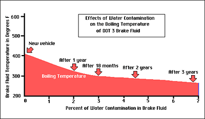

|
brake fluid |
|
According to knowledgeable road racers, the stock fluid works fine with the stock pads, as the pads will cook before the fluid will boil. However, the use of aftermarket pads should be accompanied by a fluid change. The most recommended fluid seems to be Motul RBF 600 fluid. However, examine the notes below carefully, paying special attention to the comments for Ford Heavy Duty fluid. |
||||
|
The importance of moisture: The amount of moisture in brake fluid definitely affects its performance. The big problem is that brake fluid absorbs moisture quickly. SAE field tests have shown that the average one year old car has 2% moisture in the fluid. A random test of vehicles in the U.S. showed an average water content of 2.6% for vehicles with an average age of 8 years. And 25% of these vehicles had water content greater than 4%. As water content in brake fluid increases over time, the boiling point decreases. Fluid with a reduced boiling point (or high water content) can create vapor by boiling in the caliper, or wheel cylinder. The result is sudden brake failure. And water in the brake fluid can contribute to corrosion of parts such as steel pistons and ABS modulators. |
||||
|
The end result is even though DOT 3 fluid is "rated" at greater than 401F, in the typical 3 to 4 year old car with 3 to 4% moisture content, it could boil under 300F. Bottom line: Flush any brake fluid every year or so. If you go with a fluid which attracts moisture quicker, change it more often than that. |
||||
|
DOT 3 and DOT 4 are polyglycol-based fluids and can be mixed with each other. DOT 5.1 can also be mixed with DOT 3 and DOT 4, even though it is based on a different chemical and has about half the viscosity. If DOT 5.1 is specified for an ABS system, do not add or use any other fluid type. DOT 5 is silicone-based (not less than 70% by weight of a diorgano polysiloxane) and must not be mixed with or contaminated by DOT 3, DOT 4, or DOT 5.1. Container: As stated by Baer, "plastic containers allow the fluid to absorb moisture from the air, essentially dropping it to its wet boiling point before ever being put in the car." |
||||
| Mfg | Spec | Dry/Wet Boiling Point | Can | |
|
ATE Super Blue Racing/ ATE TYP 200
|
DOT 4 | 536/392 | metal |
ATE Super Blue Racing and ATE TYP 200 are the same brake fluid in two different colors (blue and amber, respectively). BMW recommends this brake fluid for their street cars because it, like Castrol LMA, absorbs moisture very slowly. The advantage over LMA is that ATE has a much better wet boiling point. You can put this stuff in your car and forget about it for a long time. An excellent choice for a weekend track car which also sees regular street duty. |
|
Castrol LMA
|
DOT 3/4 | 446/311 | plastic |
Castrol LMA ("Low Moisture Activity") is very good at rejecting moisture and may be kept in your brake system for a couple years. |
|
Castrol SRF
|
DOT 4 | 590/518 | metal |
Castrol SRF is a hyper-exotic and hyper-expensive ($80/liter) brake fluid. From Castrol: "Castrol SRF is less hygroscopic than conventional brake fluids - it absorbs less water in a given time. Unlike conventional glycol ether fluids, Castrol SRF reacts chemically with the absorbed water to reduce its adverse effects, thus preventing the fluid's high-temperature performance and safety margins from deteriorating as rapidly as they would otherwise do." From "Castrol SRF is simply the best fluid we have ever used. It has extremely high boiling points, both wet and dry, and holds up well under the adverse conditions of road racing or other extreme duty." |
|
Ford Heavy Duty (part # C6AZ-19542-AA)
|
DOT 3 | 550/290 | metal |
Ford Heavy Duty DOT 3 is very inexpensive and is popular among racers because of its excellent dry boiling point. Considered by many to be the best-kept secret in brake fluids. It does absorb moisture quickly, though. Metal can. Recommended by Baer and Alcon. According to Hot Rods and Horsepower: "Ford Motor Company purchases [Castrol SRF] by the barrel, repackages it, and sells it as Ford Heavy Duty fluid to owners of heavy-duty trucks. Anyone may buy it from a Ford dealer under part number C6AZ-19542-AA." Although this rumor is often repeated on the 'Net, given the different specs between the two, this assertion seems questionable at best. |
|
Ford High Performance |
DOT 3 | 550/284 | plastic |
I ordered the Ford Heavy Duty fluid above from my dealer. I was told that the part number had changed and that Ford "High Performance DOT 3 Motor Vehicle Brake Fluid" was the substitute. Given the differences in the title, part number, and the plastic can, I suspect that my dealer is just full of . . ., well, wrong. The 550/284 rating suggests it is repackaged Performance Friction fluid put in a plastic can. Thanks, Ford. |
|
Motul Racing 600
|
DOT 4 | 585/421 | plastic |
Motul Racing 600 is a very exotic and relatively expensive synthetic fluid with high wet and dry boiling points. It is not suitable for the street because it absorbs moisture quickly. |
|
Performance Friction
|
DOT 4 | 550/284 | metal |
Performance Friction High Performance DOT 3 has a good dry boiling point but poor wet boiling point. The cheaper Ford Heavy Duty DOT 3 in probably a better choice. In either case, change this fluid frequently due to the poor wet boiling point. $8 per 16 ozs. |
|
AP Racing 550
|
DOT 3 | 550/284 | ||
|
AP Racing 600
|
DOT 3 | 572/284 | ||
|
Wilwood 570
|
DOT 3 | 570/284 | ||
|
Wilwood EXP600 Plus
|
DOT 4 | 633/417 | ||
� 02/09/2009 Tim Skelton